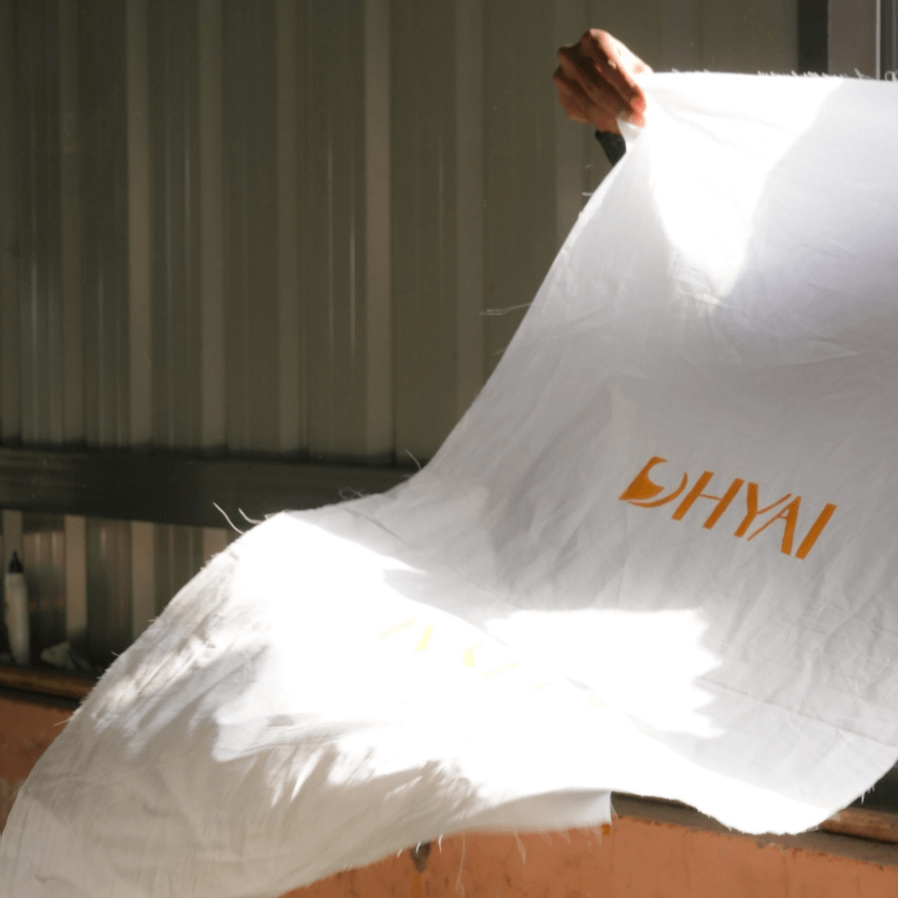
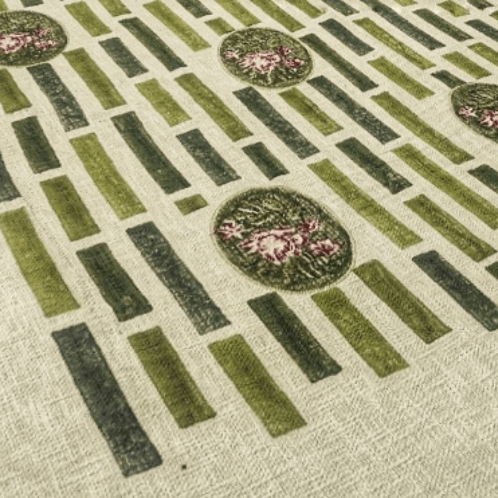

DHYAI designs objects for everyday life.
Design is integrated.
Objects endure.
Every object begins with material — its weight, its fibre, how it receives touch. Form follows from there. And time continues the work: objects soften, settle, and deepen through use.
Each artefact is designed with this continuity of time in mind.
